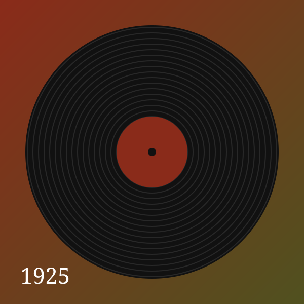

Riley Puckett, “The Boston Burglar” (Columbia 15050-D, 1925)

Background: “The Boston Burglar” belongs to a broadside-derived family related to “Botany Bay.” The narrative commonly follows a young man who turns to crime, is caught and sentenced, and warns listeners against lawbreaking. A contemporary traditional-song account explains the warning and penal-transportation narrative: https://clarelibraries.ie/localstudies/music-and-literature/music/collections/traditional-music-sessions-from-clare-live/the-carroll-mackenzie-music-collection/singers-and-songs-of-county-clare-from-the-carroll-mackenzie-collection/songs-of-clare-the-boston-burglar-sung-by-pat-macnamara/ . The Ballad Index groups “Boston Burglar” texts under Laws L16 and notes the overlap with “Botany …
Proposed role: Penal sanction / cautionary ballad; adjacent to the core grievance programme